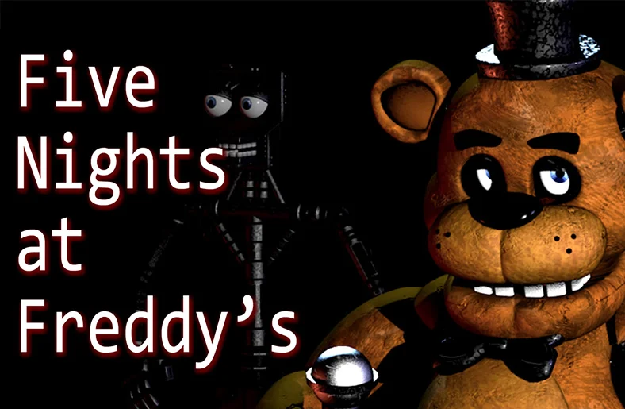

Five Nights at Freddy´s
{kind=link}
Ambientado en el ficticio restaurante de Freddy Fazbear's Pizza. El juego se centra en un guardia de seguridad nocturno defendiéndose del constante ataque de los defectuosos personajes animatrónicos del establecimiento, rastreando sus movimientos a través del edificio utilizando un sistema de cámaras de seguridad.
Trailer:
Five Nights at Freddy´s 2

De manera similar al anterior juego, Five Nights at Freddy's 2 está ambientado en el ficticio restaurante de Freddy Fazbear's Pizza, centrándose en un guardia de seguridad nocturno debiendo defenderse de las mascotas animatrónicas del establecimiento, que están siendo poseídas por las almas de unos niños asesinados en busca de venganza contra su asesino. El juego también presenta varios nuevos componentes de jugabilidad, como una linterna, una cabeza portátil de Freddy Fazbear (para engañar a ciertos animatrónicos) y minijuegos de 8-bits.
Trailer:
Five Nights at Freddy´s 3

Five Nights at Freddy's 3 es un videojuego de supervivencia y estrategia con elementos de «point-and-click»; a pesar de ello, la jugabilidad se desvía ligeramente de las anteriores entregas de la serie. De manera similar a los dos primeros juegos, los jugadores tienen la tarea de sobrevivir una semana de turnos nocturnos, que duran desde la medianoche hasta las seis de la madrugada (aproximadamente 4 minutos en tiempo real). Sin embargo, este juego presenta a un solo animatrónico conocido como "Springtrap", que puede atacar físicamente al jugador para finalizar el juego. Varios animatrónicos de las dos entregas anteriores de la serie — Freddy Fazbear, Chica, Foxy, Puppet, Balloon Boy y Mangle — regresan como "fantasmas" que no pueden dañar directamente al jugador, pero pueden obstaculizar sus esfuerzos por sobrevivir.
Trailer:
Five Nights at Freddy´s 4

Five Nights at Freddy's 4 es un videojuego de supervivencia y estrategia con elementos de «point-and-click»; de manera contraria a las anteriores entregas, el juego no se desarrolla en una oficina de seguridad, sino en la habitación de un niño; tampoco hay cámaras de seguridad y en lugar de unas llamadas telefónicas, el jugador recibe instrucciones mediante notas para ser ayudado durante el juego. El jugador también está equipado con una linterna, de manera similar al segundo juego, aunque tiene un poder ilimitado, pudiendo ser usada para alejar a cualquier animatrónico visto en el pasillo.
Trailer:
Five Nights at Freddy´s Sister Location

Five Nights at Freddy's: Sister Location es un videojuego de estrategia con elementos de «point-and-click»; la mayor parte de la jugabilidad elimina el aspecto de supervivencia de las entregas anteriores. En lugar de permanecer en una oficina de seguridad, evitando que los personajes animatrónicos lo ataquen, el jugador debe moverse de una habitación a otra para cumplir una serie de objetivos que cambian durante las noches
Trailer:
Freddy Fazbear's Pizzeria Simulator

Freddy Fazbear's Pizzeria Simulator es un videojuego, en su mayoría, de simulación económica; comenzando como un juego de 8-bits, el jugador debe controlar a Freddy Fazbear, el antagonista principal de la primera entrega, para distribuir pizzas a varios niños. Finalmente, la jugabilidad de esta sección del juego termina en un glitch, que es introducido a propósito
Trailer:
Five Nights at Freddy´s Ultimate Custom Night

el jugador puede elegir entre cincuenta personajes de las seis primeras entregas de la serie, así como a algunos de FNaF World, y establecer su dificultad de inteligencia artificial desde un mínimo de '0' hasta un máximo de '20'. Durante la noche, el jugador debe realizar un seguimiento de varias mecánicas, como abrir o cerrar puertas, monitorear un sistema de ventilación, verificar los conductos de ventilación, entre otros, para evitar ser asesinado por los personajes animatrónicos.
Trailer:
Five Nights at Freddy´s Special Delivery

Five Nights at Freddy's: Special Delivery es un videojuego de realidad aumentada con elementos de terror; el jugador recibirá varios personajes animatrónicos al azar, cuya llegada puede ser percibida por el sonido de un timbre. Iniciando con Freddy Fazbear, los animatrónicos comenzarán a volverse peligrosos, por lo que el jugador deberá protegerse con una linterna para poder localizarlos y un arma de electrochoque en caso de que se acerquen demasiado.
Trailer:
Five Nights at Freddy´s Help Wanted

Five Nights at Freddy's: Help Wanted es un videojuego de realidad virtual con elementos de terror; el juego contiene cincuenta minijuegos a los que se puede acceder desde el menú. Muchos de estos minijuegos recrean la mecánica de las anteriores entregas de la serie, con sus controles siendo adaptados para adecuarse mejor a un entorno visual en 3D
Trailer:
Five Nights at Freddy´s Security Breach

El jugador toma el control de un niño llamado Gregory, que está encerrado en un gran centro comercial lleno de animatrónicos asesinos y debe completar numerosas misiones para sobrevivir la noche y poder escapar. Los animatronicos estilo "Glamrock" se encuentran por todo el centro comercial incluyendo a Glamrock Freddy, Glamrock Chica, Montgomery Gator, Roxanne Wolf, el asistente de guardería, y DJ Music Man. Gregory también se encontrará con otros tipos de enemigos, como Vanessa, la guardia de seguridad; Vanny, una mujer corrupta y asesina con traje de conejo; y los robots PERSONAL y de mapa, que pueden alertar a los enemigos sobre la ubicación de Gregory si lo detectan
Trailer:
Five Nights at Freddy´s pelicula

Estreno: 26 de octubre de 2023
Sinopsis:
Mike Schmidt (Josh Hutcherson) es un joven con problemas financieros que cuida de su hermana de 10 años, Abby (Piper Rubio) y que vive atormentado por la desaparición sin resolver de su hermano menor más de una década antes. Recientemente despedido y desesperado por trabajar para poder mantener la custodia de Abby, Mike acepta tomar un puesto como guardia de seguridad nocturno en un restaurante temático abandonado: Freddy Fazbear's Pizza. Pero Mike pronto descubre que nada en Freddy's es lo que parece. Con la ayuda de Vanessa (Elizabeth Lail) una oficial de policía local, las noches de Mike en Freddy's lo llevarán a encuentros inexplicables con lo sobrenatural y lo arrastrarán al corazón negro de una pesadilla indescriptible.